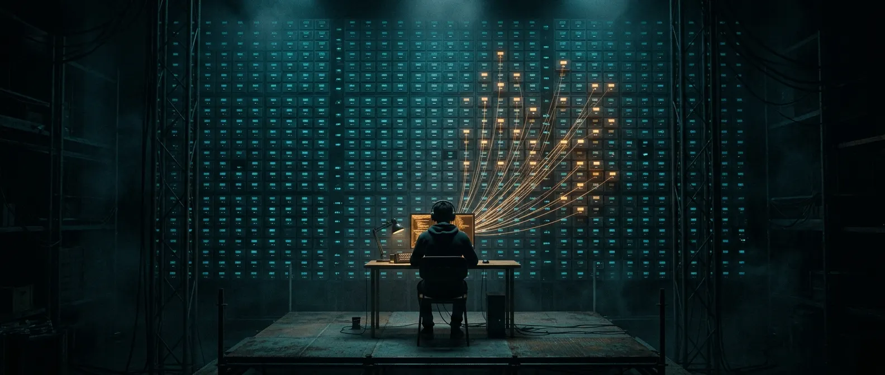

Built for developers
Ship with an agent that already knows the repo. It plans features, opens PRs, and never asks you to re-explain the codebase.
From plan to pull request, Ogcode does the work end to end. OGmap steers it straight to the right files in even a huge codebase, it reads only the lines that matter, and it recalls instead of re-sending your whole conversation every turn — so you pay about a third of the usual bill.
curl -fsSL https://ogcode.in/install.sh | sh
or brew tap prasenjeet-symon/tap && brew install ogcode All releases ↗
Every decision, every dead end, every why — indexed once, recalled on demand. Only what this turn needs is sent.

70% fewer tokens
Each turn sends what matters — not the whole conversation again.
Day 90
What you decided in March is still right there in September.
Ship with an agent that already knows the repo. It plans features, opens PRs, and never asks you to re-explain the codebase.
Month three feels like day one. Conventions, choices and rejected ideas carry over — no amnesia.
One Go binary, self-hosted, AGPL. No account, no cloud. Pair it with Ollama and no model call leaves the room.
Ogcode sends only what the current turn needs, so requests stay well under 200K tokens however long a session runs. Models read a lean context most accurately, which is why smaller, cheaper and local models do their best work here.
54K
Typical request
The median across 21,252 requests in 449 sessions.
99%
Under 180K
Almost every request leaves the model room to think.
168K
Longest session’s peak
2,589 steps, and the context never crept up.
Models read a short, focused prompt more reliably than a long one. Details buried deep in a huge context are the first to be missed, so a lean request keeps every answer grounded.
Flash, mini and local models that stumble on a bloated context do solid work on a lean one. Pick the cheaper model and still get the job done.
Or none at all. Bring a key from any major provider — or run fully local with Ollama. Switching models never resets what Ogcode remembers.
Claude gets a tight, recalled context every turn — not a transcript that grows until it breaks.
One OpenAI-compatible slot points at GPT — or at Gemini, Groq, DeepSeek or any provider on the belt below.
Hundreds of models behind a single key. Change models mid-project; the memory stays with the project.
Local and free. Ogcode auto-detects a running Ollama, so your prompts stay on your machine.
Rather pay one flat price? OGX: $2 of tokens every day, for $5 a month
And any OpenAI-compatible endpoint…
OGX runs DeepSeek and GLM on our own high-performance inference cluster. Replies start in about a second and stream faster than you can read them.
paginate the orders page
first token 0.9 s312 tok/s
about 310tok/s
DeepSeek V4.1 Flash
Median output speed on real coding prompts.
about 215tok/s
GLM 5.3 Flash
Median output speed on the same prompts.
about 1s
To first token
Replies begin about a second after you send, on both models.
$5/ month
One flat price
Both models come with OGX: $2 of tokens every day, $60 a month, and a bill that never moves.
See the OGX planEverything a long session needs to stay sharp — and cheap.
Without recall, every turn re-sends the entire conversation. The context window fills up, the bill climbs with every message, the oldest turns fall out of the window, and the same files are read in full again and again.
With Ogcode, each turn recalls only what it needs — the relevant decisions and the exact file ranges — so every turn sends one small, tight context window, and what you decided months ago is still remembered.
one tight window, every turn
(Not for the last two hundred turns, again.)
Other agents re-send the whole conversation every turn, so the bill climbs with every message. Ogcode sends one tight window, so it stays flat.
See the numbersLong sessions stop being a countdown to amnesia. The window carries this turn's context — not every turn that came before it.
How it worksDecisions, conventions and rejected approaches are written down as the work happens — and brought back the moment they matter again.
What it remembersOther agents hand the model every old turn, stale tool output and whole file, then ask it to find the answer in the noise. Ogcode's context is garbage-free — only the decisions, files and line ranges this question needs — so answers land on point, and the first attempt is usually the review-ready one.
How it worksold turns · stale tool output · whole files · dead ends
only what this question needs
Ogcode maps before it reads, reads ranges instead of whole files, and recalls instead of replaying. Every query gets its own context, built on the fly.
Describe the outcome and lock the plan. Ogcode breaks it into a board of tasks, runs independent ones in parallel in isolated git worktrees, and opens a pull request for each.
Think Google Maps, but for your agent. OGmap charts your whole codebase — every module, route and helper — so the agent always knows where things live and heads straight there.
Every declaration is mapped to its lines, so the agent reads the exact range a task needs — and leaves the other four hundred lines alone.
Ogcode doesn't drag a fixed history into every turn. For any query, it builds the context it needs on the spot — recalling past decisions, finding the right files with OGmap, and reading just the lines that matter. With less noise to fight through, the first attempt is usually the review-ready one.
Specs, proposals and spreadsheets sit right beside the source. Ogcode reads PDF, DOCX and CSV natively — no exports, no copy-paste.
Reads only the lines a task needs, so turns finish in seconds, not minutes — and stay that fast on a ten-year-old monorepo.
Other agents commit in the dark. Ogcode works in the open — in Build Mode every change waits in your working tree as a real git diff, and nothing is written to history until you say so.
Every change lands in your working tree. Inspect it, stage it, unstage it, or throw it away.
Review file by file and hunk by hunk before anything touches history.
Nothing merges without a human yes.
The ones skeptics ask first — answered plainly.
ollama on macOS and Linux. Offline you lose the web search tool and hosted models — everything else works.irm https://ogcode.in/install.ps1 | iex in PowerShell, or run the Docker image. Opening PRs automatically needs the GitHub CLI authenticated.One Go binary. Any model, your keys. No account and no cloud — your sessions and memory stay in a local database.